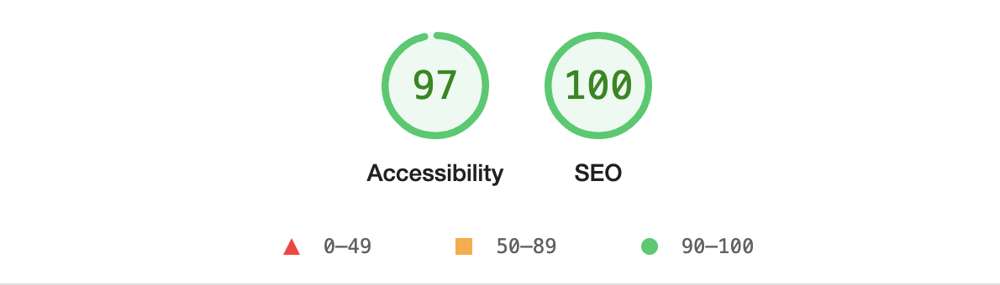
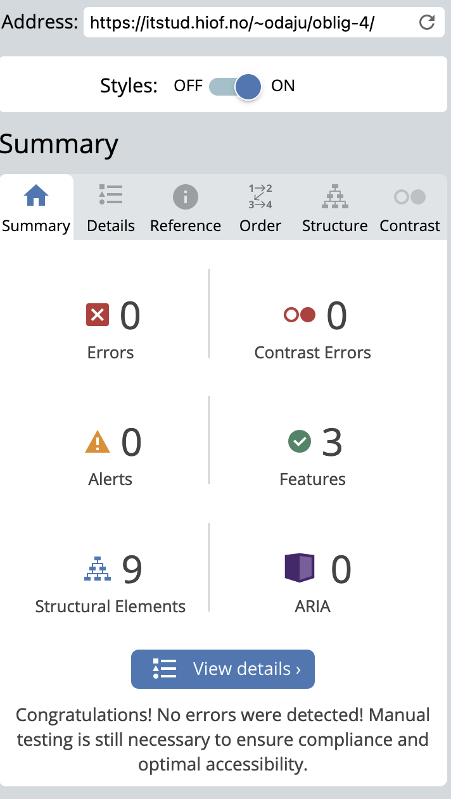
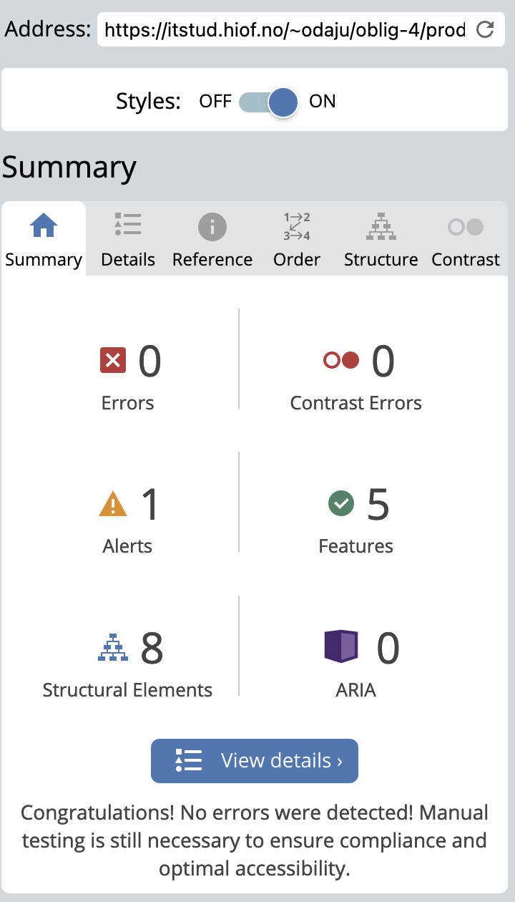
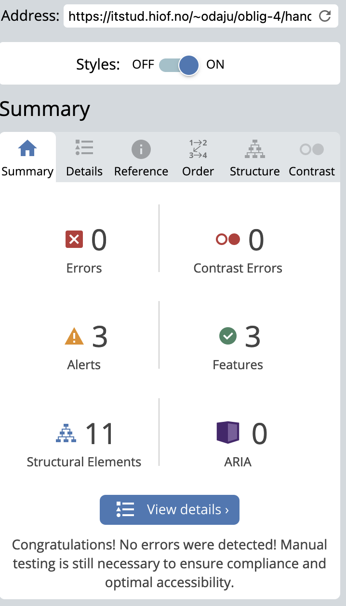
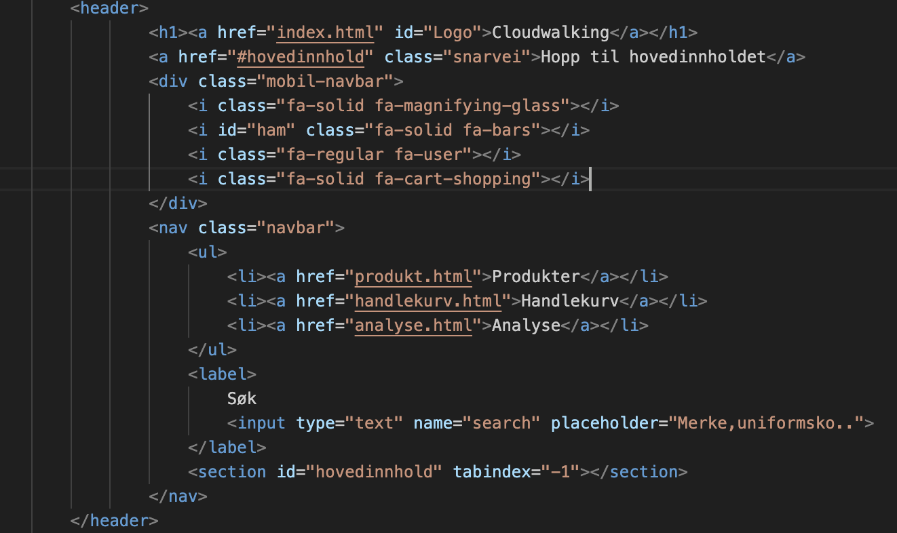
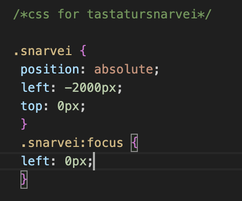
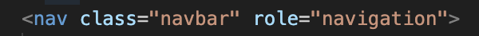
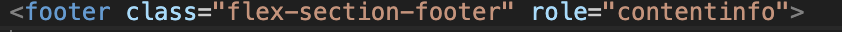

Nettsteds Analyse og forbedringer
Nøkkelord
Ettersom oppgaven vår i stor grad har vært å lage en nettbutikk for sko, falt det selvfølgelig naturlig å velge nøkkelord som er forbundet med sko. Jeg valgte nøkkelordene mine basert på at de jevnt over ble søkt etter geografisk over hele Norge, at de har relevans til hva nettsiden faktisk selger, men også hva jeg personlig tror brukeren ville søkt etter. Nettstedet jeg har laget baserer seg på målgruppen flyvende personell. Jeg har derfor tatt hensyn til dette også, når jeg har valgt ut nøkkelord.
Mine nøkkelord ble derfor:
- Sko
- Pensko
- Uniform
- Fly
- Såler
SEO analyse med Lighthouse og Webaim
I tråd med oppgavens neste punkt kjørte jeg en SEO analyse ved hjelp av lighthouse på alle 3 sidene av nettsiden. Under kan vi se analysen av de forskjellige sidene, før det ble gjort endringer.
Forside:


I analysen av siden sin performance kan vi se at siden gjør det relativt godt i sammenlikning med andre sider. Lighthouse gir performance på forsiden en 99.

På accesibility kan vi se at Lighthouse gir en score på 92 og begrunner det med at bakgrunnen ikke har stor nok kontrast.

Best practices får en score på 95, hvor lighthouse begrunner det med at den finner en browser feil linket til nettsiden.

Forsiden får en score på 95 for SEO, hvor det begrunnes med at det mangler metadata.
Produktside:
I analysen av produktsiden kan vi se at lighthouse gir en score på 97 for performance.
Videre ser vi at lighthouse gir en score på 84 for accesibility. Lighthouse begrunner det med at bakgrunnen ikke har stor nok kontrast og at handlekurv buttons ikke har særegne attributter.
På best practices for produktsiden gir lighthouse en score på 95. Det begrunnes med samme browser feil som nevnt på forsiden.

Produktsiden får en score på 92 og det begrunnes med at det mangler metadata og metadescription.
Handlekurv
I analysen av handlekurven gir lighthouse handlekurvsiden en score på 98 for performance. Gjennom mitt arbeid med lighthouse analyse har jeg bemerket meg at performance scoren ofte varierer ut i fra hvilket nett man er koblet til.

Når det kommer til accesability i handlekurven gir lighthouse handlekurvsiden en score på 92 og begrunner det med at knappene med tekst har for liten kontrastfarge. De vil derfor bli vanskelig for noen brukere å lese.
Best practices har samme gjentagende problem når det kommer til browser.
Handlekurven har også samme gjentagende problem med at det mangler metadata og metadescription. Lighthouse gir derfor nettsiden en score på 92 for SEO her også.
UU-analyse via Webaim
Slik som oppgaven viser til har jeg kjørt en uu-analyse gjennom Webaim for å undersøke hvor tilgjengelig er nettsiden er. Dette for å sikre at vi når alle brukere på best mulig måte.
Forside:
Slik ser det første resultatet vi får opp for nettsiden ut. Her ser vi at det er ingen error, men det finnes flere kontrast error og noen alerts. I neste bilde skal vi se på hva de ulike kategoriene betyr.
Analysen til Webaim konstanterer at det er flere områder på nettsiden som har for lite kontrastfarger. Dette gjelder jevnt over på alle områdene man ser de rød punktene. Videre viser analysen til at det mangler en h1 på forsiden og at Herre knappen linker til samme side som dame knappen. Dette gjelder de gule områdene. Ut i fra analysen kan det se ut til at det må endres på farger, slik at kontrastene blir større. Samt sette inn en h1 og fjerne linken fra herre-knappen.
Produktside
På produktsiden kan vi se at det igjen ikke er noen error tilstede, men flere kontrast-error. Den gir også beskjed om 3 alerts, hvor blant annet en av dem er at de tre bildene har samme alt beskrivelse og at det mangler en h1 på hele nettstedet.
Handlekurv
I analysen av handlekurvsiden er det igjen ingen error, men til gjengjeld en del kontrast-error. Den gir også flere alerts hvor den blant annet foreslår at man skal sette inn en h1 eller h2 på områder som kan ligne overskrifter. Analysen gir også beskjed om at brødsmulestien linker til samme sted. Den foreslår også at man kan lage en listeordning i handlekurven isteden for p-tag
ChatGpt-analyse
I tråd med oppgaven beveget jeg meg videre til et tredje analyseverktøy. Her var oppgaven å få chatgpt til å produsere mulige endringer/løsninger, uten at den skulle endre på noen kode. Jeg åpnet derfor med å spørre slik:
Etter å ha gitt chatgpt koden til index.html filen ga den meg dette svaret:
Her la den vekt på hva som var bra, men ga meg også forslag til hva jeg kunne endre på. Jeg gikk videre og sendte den koden for produkt.html, og fikk til svar:

Her produserer chatgpt på lik måte en liste når det kommer til hva den syntes er bra og forslag til forbedringer. Det samme gjør den også for handlekurv.html slik vi kan se under:
Jeg ønsket at chatgpt skulle ta hensyn til css jeg hadde skrevet og spurte den derfor om å ta hensyn til all koden jeg hadde sendt fra før og samtidig se på css, for så å lage en oppsumering. Oppsumeringen skulle da være for alle 3 sidene av nettsidene, inkludert css. Da ga den meg følgende liste:

Tabell
| Område for endring | Lighthouse | Webaim | ChatGpt |
|---|---|---|---|
| Meta tag | Foreslår å legge til en meta description for å bedre SEO | Foreslår å legge til en meta description for å bedre SEO | Foreslår å legge til en meta description for å bedre SEO |
| Kontrast problem | Beskriver at det er for dårlig kontrast mellom bakgrunnen og skrift på flere elementer på siden. | Gir også beskjed om at det er for dårlig kontrast mellom bakgrunnen og skrift på flere av elementene på siden. | Sier ingenting om kontrast og fargebruk. |
| Alt Attributter | Forelslår endring på alt attributter på bildene tilhørende produktsiden. | Foreslår endring på alt beskrivelser tilhørende bilder på produktsiden. | Foreslår endring av alt beskrivelser på bilder tilhørende produktsiden. |
| Duplikat av id tag | Gir også beskjed om at det finnes duplikater av samme id på produktbildene. | Sier ingenting om duplikat av id. | Nevner ikke unik id for bildene, men nevner det for "legg til i handlekurv" knappen på produktsiden. |
| H1 | Sier ingenting om manglende h1. | Foreslår også at det bør settes inn en h1. | Sier ingenting om manglende h1. |
Forbedringer
I denne delen av analysen skal jeg ta for meg endringene som ble foreslått, gjøre endringene i selve koden og dokumentere om endringene hadde noen innvirkning på analysescore.
Her kommer en liste over forbedrinringene jeg foretok meg med påfølgende bilder for endringer:
- La til metatag i head på alle 3 sidene av nettsiden.
- Endret på alle kontrast-error som ble nevnt.
- Endret på alt atributter slik at de ble unike på hvert bilde på produktsiden.
- Endret fra id til klasser på overnevnte bilder, slik at det ikke ble gjentagende id.
- Lagt til h1 på alle 3 sidene.
Metatag
Under ser man bilde av hvordan min head så ut før endring:

Jeg la deretter inn meta name="description" content="#" taggen i head på alle 3 sidene. Se eksempel på indexsiden under:

Kontrast
Indexsiden før endring:

Index etter endring:

Produkt før endring:

Produkt etter endring:

Handlekurv før endring:

Handlekurv etter endring:

Footer før endring

Footer etter endring

Resultater
Etter å ha gjennomført alle endringer som ble nevn kjørte jeg nettsiden gjennom lighthouse og webaim på nytt. I lighthouse fikk alle sidene samme score, så der legger jeg kun med ett bilde.
Webaim
Indexsiden fikk denne scoren etter endringer.
Produktsiden fikk denne scoren etter endring.
Handlekurvsiden fikk denne scoren etter endring
Som vi ser så har scoren forbedret seg på alle 3 sidene. SEO er på 100% og webaim viser ikke lenger tegn til kontrast error eller lignende.
Tilgjengelighet
Jeg testet nettsidens tilgjengelighet ved bruk av stemmeoppleser. Jeg stilte inn slik at maskinen skulle lese opp det jeg holdt over. Alt fungerete som det skulle, og det var ingenting som ble lest opp rart. Men på dette punktet legger man virkelig merke til hvor viktig det er med gode beskrivelser på hva som for eksempel er avbildet. Da det faktisk er dette stemmeoppleseren sier høyt. Når det kommer til tastaturnavigering får jeg ikke til å klikke meg rundt på nettstedet via tab per nå. Jeg la inn en snarvei til hovedinnhold med kode og css fra uu.tilsynet sine nettsider.
 Aria attributter
Jeg syntes det var vanskelig å finne informasjon om hvordan man bruker Aria attributter, men har gjort et forsøk ut i fra hva jeg har klart å lese meg opp i. Jeg la til disse aria rollene på alle 3 sidene:
 Microdata
Her har jeg lagt inn microdata: